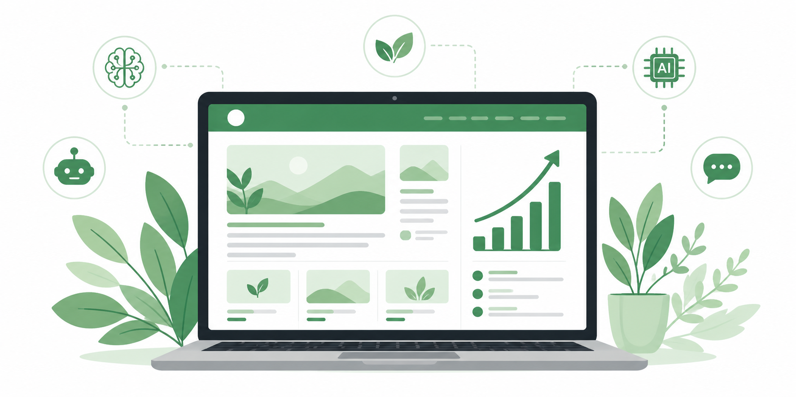
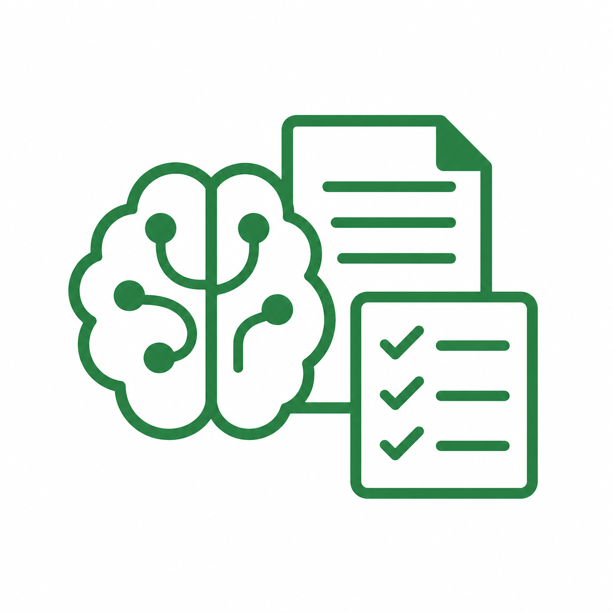
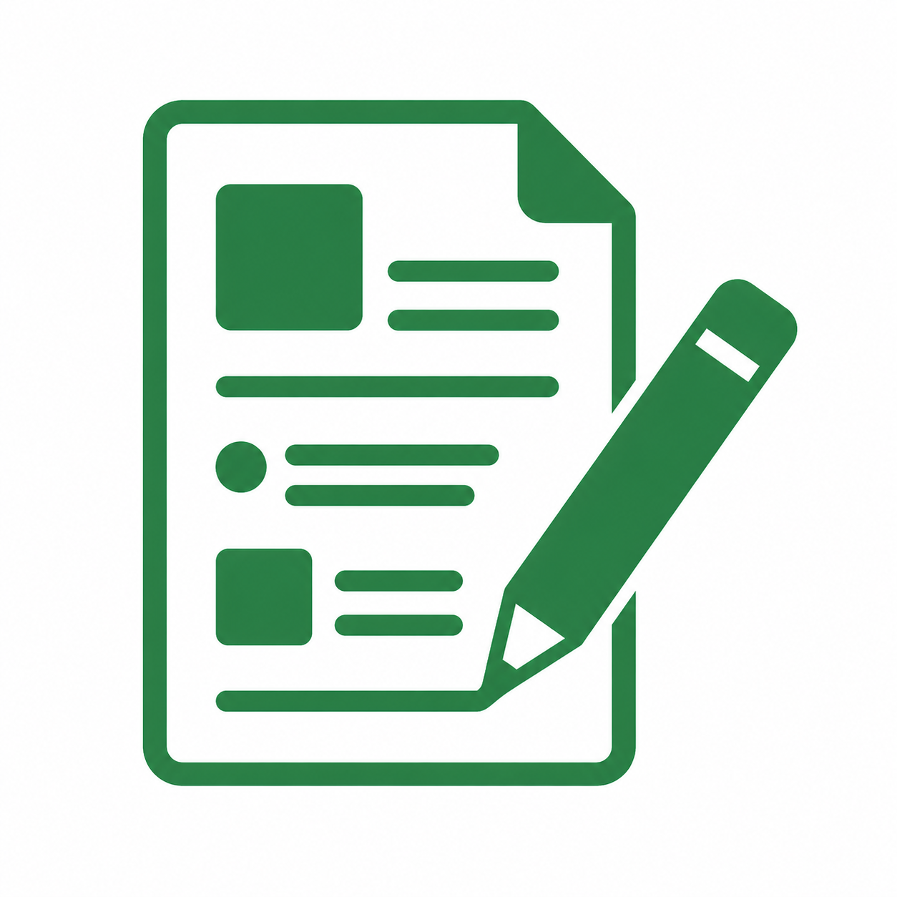
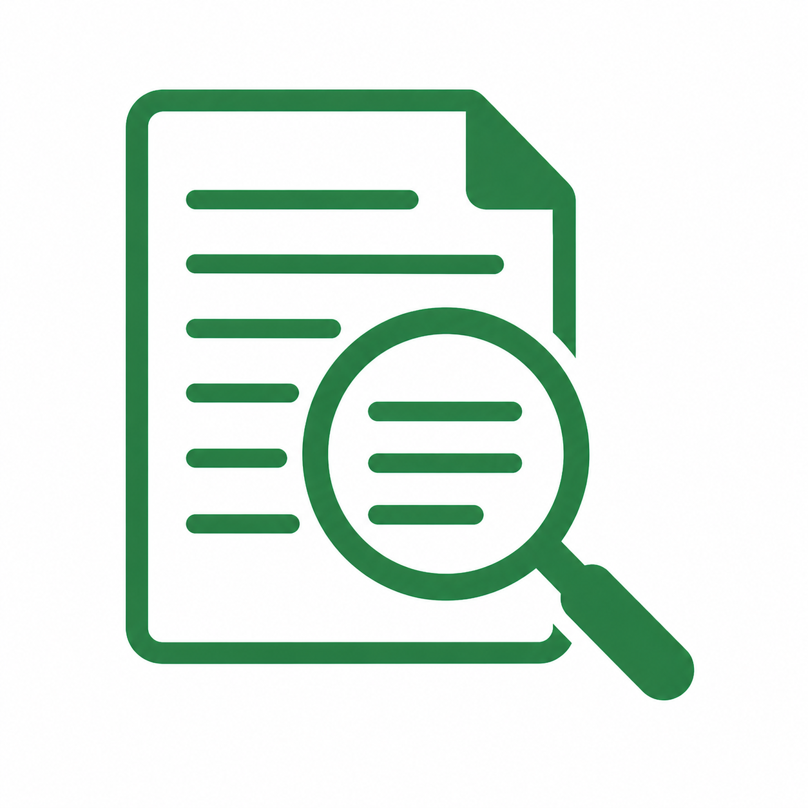
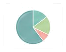
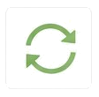

BuddyFlowは、AIがあなたのブログ運営をまるごと支援する自動運用プラットフォームです。時間がなくても、知識がなくても、資産になるブログを。

続けたいのに、気付けば止まっている。そんなあなたのために BuddyFlow はあります。
本業や家事で忙しくて、ブログに時間をかけられない…
書くのが大変で、続けるモチベーションが続かない…
何を書けばいいのか分からず、最初の一歩が踏み出せない…
AIがブログ運営の全工程をサポートする自動運用プラットフォームです。あなたは「テーマ」を入れるだけ。あとはAIが、読まれる記事をつくり、整え、育ててくれます。
あなたが決めるのはここだけ
AIエンジン
あとは任せるだけ
テーマを入れるだけで、AIが調査から入稿まで一気通貫で実行します。

AI編集会議
検索意図・競合・構成を分析し、記事の設計図を作成します。

長い見出しをAIが個別に収集、情報を網羅的に生成します。
各パートをつなぎ、一つの記事として自然に結合します。

誤字脱字のチェックや、読みやすさ・トーンを最適化します。
装飾を施し、WordPressへ自動で入稿・公開準備まで行います。
新規立ち上げから既存ブログの改善まで、ブログ運営に必要なことをまるごとカバーします。
ドメイン取得から初期設定、最適な設計までAIがサポート。ゼロからでもすぐに始められます。

すでにあるブログにも対応。記事の追加・改善を自動化し、収益化を加速させます。

記事の更新・リライト・削除判断までAIが定期的にチェック。ブログを常に最適な状態に保ちます。
業種・経験を問わず、ブログで資産を作りたいすべての人のために。
本業が忙しくても、副業で資産になるブログを育てたい。自動化で時間効率を生み出したい人に。
集客のためにブログを活用したい。専門性を発信して、信頼と収益を両立させたい人に。
何から始めればいいか分からない…AIと一緒なら迷わず続けられる。
あなたのフィードバックが、BuddyFlowをもっと良くする力になります。
今すぐXをフォローしてDMを送るだけ。難しい手続きは一切ありません。
無料モニターに応募する XをフォローしてDM（@hitsuji__works）ここに無いご質問は、XのDMからお気軽にどうぞ。
はい。テーマを入力するだけで、調査・執筆・校閲・WordPress入稿までAIが自動で実行します。もちろん、公開前に内容を確認・編集することも可能です。
設定した頻度に合わせて自動投稿します。週1本・週3本など、ご自身のペースに合わせて柔軟に調整できます。
はい、問題ありません。WordPressへの接続設定も、画面の案内に沿って進めるだけで完了します。プログラミング等の知識は一切不要です。
もちろんです。AI生成記事と手書き記事を混在させることもできます。BuddyFlowは「完全自動」と「サポート自動」を使い分けられます。
モニター期間中はフィードバック（月1回程度のアンケート回答）をお願いしています。利用自体に費用は発生せず、フィードバックをご提供いただく限り永久無料でご利用いただけます。
今すぐBuddyFlowの無料モニターに応募して、AIと一緒にブログを育てましょう。
永久無料 / フィードバック提供と引き換え / いつでも退会可